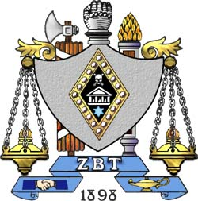
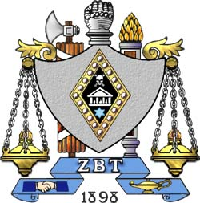

Integrity is the cornerstone of every brother's pysche. Being able to say no to temptation, and yes to composure is what makes us different from other fraternities. Our new meber education process consists of many weekend classes, where we put our new members in tough moral situations, forcing them to make a choice in the heat of the moment. We believe these exercises sew the seeds of integrity that can grow into beautiful flowers through the sustenence of Brotherly Love.
However, sometimes these ideas aren't as clear as we would like them to be, so we also teach them the ideas of integrity more traditionally. We present situations to the new members, requiring them to work as a group to work out the best solution. This creates a sense of ownership of their actions, and also creates the group dynamic that will help them to keep each other afloat in the years to come.
Just as with problems of Social Responsibility, problems of Integrity are held as the highest priority. If we lose our sense of integrity, all our other values will fade into nothing, for we have nothing reminding us of what is right. As a fraternity, we do not allow brothers to disregard their sense of integrity. If we see any sign of this happening, we nip it at the bud, finding out what caused this issue and why, and then going about finidng a long term solution.